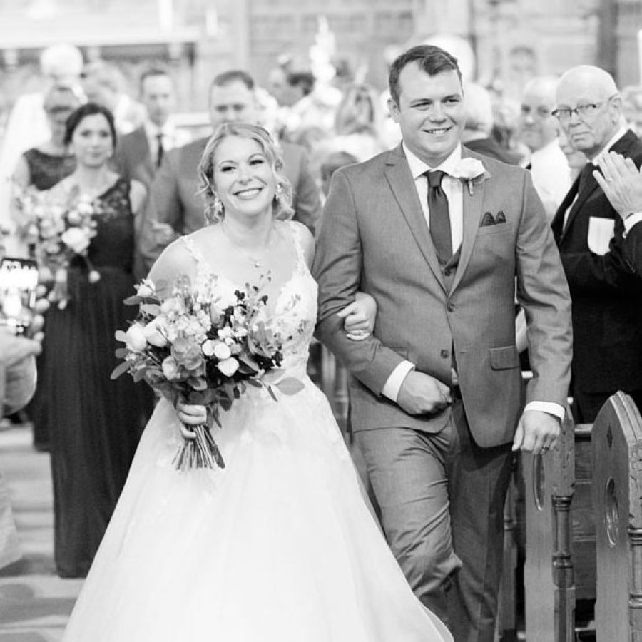

Member of Parliament for Parkland
Member of Parliament for Parkland

Canadian Member of Parliament for Parkland
Dane grew up in and around the riding of Parkland. His family has farmed outside of Spruce Grove for generations, and he is a proud life-long Albertan. Dane, his wife Raechel and their three children Brooke, Alexander, and Harrison split their time between their home in Stony Plain and Ottawa.
Dane graduated from Edmonton Christian High School in 2009 and pursued a degree in history and political studies at Trinity Western University where he graduated with a Bachelor of Arts in 2014. Before serving as a member of Parliament, he worked as a Parliamentary Advisor to St. Albert-Edmonton MP Michael Cooper and the Honourable Ed Fast who served as the Minister of International Trade.
Shadow Minister for Emergency Preparedness and Community Resilience, holding the government accountable for disaster management.
Sitting member on the Standing Committee on Public Safety and National Security, fighting for responsible firearms owners and against foreign interference.
Pressed the government for answers on the catastrophic 2024 Jasper wildfire, revealing years of inaction on removing fire-hazard deadwood.
Holds a commission as a Captain in the Canadian Armed Forces Primary Reserve alongside his Parliamentary duties.
Dane is currently the Shadow Minister for Emergency Preparedness and Community Resilience, responsible for holding the government accountable for its management of disasters and emergencies. In July 2024, Albertans were devastated by the catastrophic wildfire in Jasper. As the Shadow Minister, Dane worked tirelessly to press the Liberal government for answers on how the fire was allowed to happen. The subsequent Parliamentary inquiry revealed that the Liberal government knew Jasper was in danger for years, but failed to act to remove dry, pine beetle-infested deadwood.
On top of his role in the Shadow Cabinet, Dane is a sitting member on the Standing Committee on Public Safety and National Security where he has fought hard against the Liberal gun confiscation regime which targeted responsible firearms owners including hunters and sports shooters. He was also at the forefront of the battle against foreign interference in our elections and improving Canada's cybersecurity legislation to ensure that our society is better prepared to meet these threats. In addition to his political resume, Dane holds a commission as a Captain in the Canadian Armed Forces Primary Reserve.

Join our email list to receive news, events, and important updates from the riding.